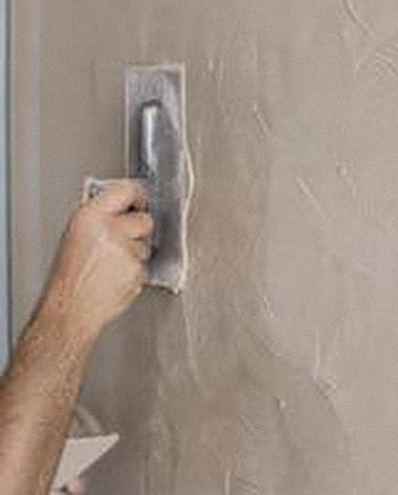

Votre portrait ici Photo d’illustration
À propos
Un artisan.
Un interlocuteur.
Je travaille les sols en résine et le béton ciré depuis plus de 12 ans.
J’ai dirigé ma propre entreprise de sols et de rénovation pendant 6 ans, puis j’ai été responsable de chantier et formateur : j’ai formé d’autres applicateurs au métier.
Avec Atelier Facette, basé à Villepreux, vous avez un seul interlocuteur, du devis à la fin du chantier.
12ANS +
d’expérience résine & béton ciré
6ANS
à la tête de ma propre entreprise
[X]
applicateurs formés au métier
1
seul interlocuteur, du devis à la fin
Zone d’intervention
Villepreux
et alentours.
J’interviens pour vos travaux de rénovation intérieure dans les Yvelines (78), autour de Villepreux.
- Villepreux Base · 78450
- Les Clayes-sous-Bois 78
- Plaisir 78
- Saint-Cyr-l’École 78
- Bois-d’Arcy 78
- Fontenay-le-Fleury 78
- Versailles 78
- Et environs
Fontenay-le-Fleury
Versailles
Saint-Cyr-l’École
Bois-d’Arcy
Les Clayes-sous-Bois
Plaisir
Villepreux
Plan schématique